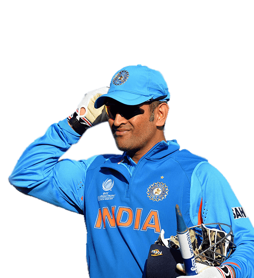

FAMOUS CRICKETERS
DHONI
KOHLI
SACHIN

Mahendra Singh Dhoni (/məˈheɪndrə ˈsɪŋ dhæˈnɪ/ ⓘ; born 7 July 1981) is an Indian professional cricketer. He is a right handed batter and a wicket-keeper. Widely regarded as one of the most prolific wicket-keeper-batsmen and captains, he represented the Indian cricket team and was the captain of the side in limited-overs formats from 2007 to 2017 and in test cricket from 2008 to 2014. Dhoni has captained the most international matches and is the most successful Indian captain. He has led India to victory in the 2011 Cricket World Cup, the 2007 ICC World Twenty20 and the 2013 ICC Champions Trophy, the only captain to win three different limited overs tournaments. He also led the teams that won the Asia Cup in 2010, 2016 and was a member of the title winning squad in 2018.
Born in Ranchi, Dhoni made his first class debut for Bihar in 1999. He made his debut for the Indian cricket team on 23 December 2004 in an ODI against Bangladesh and played his first test a year later against Sri Lanka. In 2007, he became the captain of the ODI side before taking over in all formats by 2008. Dhoni retired from test cricket in 2014, but continued playing in limited overs cricket till 2019. He has scored 17,266 runs in international cricket including 10,000 plus runs at an average of more than 50 in ODIs.
Virat Kohli (Hindi pronunciation: [ʋɪˈɾɑːʈ ˈkoːɦli] ⓘ; born 5 November 1988) is an Indian international cricketer and the former captain of the Indian national cricket team. He is a right-handed batsman and an occasional medium-fast bowler. He currently represents Royal Challengers Bengaluru in the IPL and Delhi in domestic cricket. Kohli is widely regarded as one of the greatest batsmen of all time.[3] He holds the record as the highest run-scorer in T20I and IPL, ranks third in ODI, and stands as the fourth-highest in international cricket.[4] He also holds the record for scoring the most centuries in ODI cricket and stands second in the list of most international centuries scored. Kohli was a member of the Indian team that won the 2011 Cricket World Cup, 2013 ICC Champions Trophy, and captained India to win the ICC Test mace three consecutive times in 2017, 2018, and 2019
 Fondly called the “God of Cricket” or “Master Blaster,” Sachin Tendulkar is one of the greatest sportspersons of all time. Whether on or off the pitch, he has always been a bold and passionate advocate for children's rights.
Sachin was appointed as the first UNICEF Regional Goodwill Ambassador for South Asia in 2013. Since then, he has been playing a pivotal role in improving the lives of children in South Asia. His support has contributed towards UNICEF's advocacy for the rights of children and collective action for children.
At present, his collaboration with UNICEF South Asia focuses on:
Improving the mental and physical well-being of children and youth, especially through sports and recreational activities.
Strengthening early childhood development programs to provide the best start to life for every child.
Ensuring children and families in South Asia have access to lifesaving health and nutrition services, quality education services, clean water and hygienic and safe environments to grow up in.
Fondly called the “God of Cricket” or “Master Blaster,” Sachin Tendulkar is one of the greatest sportspersons of all time. Whether on or off the pitch, he has always been a bold and passionate advocate for children's rights.
Sachin was appointed as the first UNICEF Regional Goodwill Ambassador for South Asia in 2013. Since then, he has been playing a pivotal role in improving the lives of children in South Asia. His support has contributed towards UNICEF's advocacy for the rights of children and collective action for children.
At present, his collaboration with UNICEF South Asia focuses on:
Improving the mental and physical well-being of children and youth, especially through sports and recreational activities.
Strengthening early childhood development programs to provide the best start to life for every child.
Ensuring children and families in South Asia have access to lifesaving health and nutrition services, quality education services, clean water and hygienic and safe environments to grow up in.